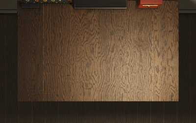

FIELD NOTES / 01
毫米波雷达基础
6节：距离、相位、速度、系统设计、角度、检测与跟踪
取起手稿 · 开始阅读 ↗FIELD NOTES / 02现代数字信号处理
随机信号 → Wiener/预测 → Kalman → LMS
取起手稿 · 开始阅读 ↗FIELD NOTES / 03阵列信号处理
阵列几何 → 空间统计 → 子空间/似然方法
取起手稿 · 开始阅读 ↗FIELD NOTES / 04高等工程数学
对象 → 线性作用 → 内积几何 → 相似结构
取起手稿 · 开始阅读 ↗FIELD NOTES / 05现代信号处理
信号描述 → 统计与变换 → 采样硬件与恢复
取起手稿 · 开始阅读 ↗FIELD NOTES / 06毫米波雷达系统解析
硬件接口、固件数据流与信号处理
取起手稿 · 开始阅读 ↗翻开桌面手稿，或抬头看书柜。场景来自原始三维几何，不是木纹背景图。
正在布置书房…
打开私人藏书
场景中的其他活页夹为原项目的场景模型，并非新增藏书。当前实际藏书为《正义之心》。
密钥仅保存在当前页面内存，不上传、不写入缓存。